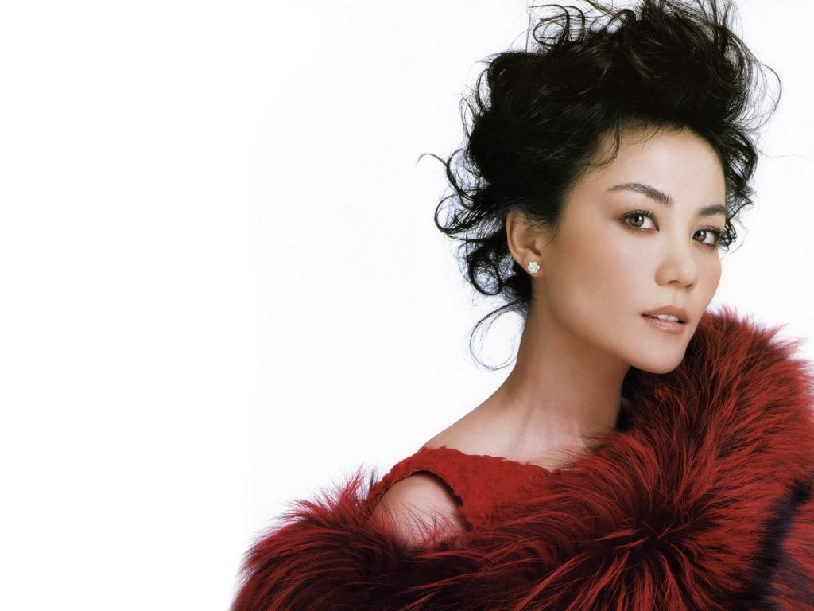
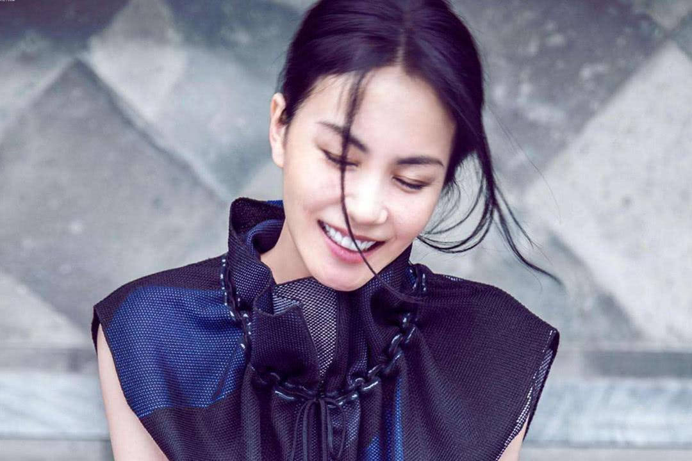
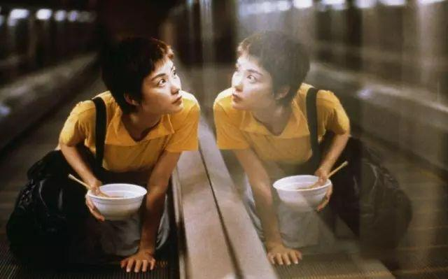

王菲
王菲
王菲（英文名：Faye
Wong，1969年8月8日－），香港女歌手、音乐人、演员，曾用艺名王靖雯
出生于北京，1987年随父亲举家移民香港，并于1989年以粤语专辑《王靖雯》出道。
王菲在华人地区拥有极高的知名度，是华语乐坛成就最高、影响力最大的歌手之一，
被誉为大中华地区的“乐坛天后”、“传奇巨星”；
重要事件
-
1998年10月8日，王菲推出国语专辑《唱游》，也是华语流行乐坛第一张使用HDCD（高分辨率CD）技术录制的唱片专辑。
-
整体风格缤纷而大气，王菲的唱风也一扫上张专辑的慵懒和简单，运用了美声、拖音、气声等多种技巧。
-
2001年，王菲推出在EMI最后一张的中文唱片《王菲》，在百代的头尾两张专辑都叫“王菲”。
- 销售开出红盘，在日本的最高成绩是Oricon专辑销量日榜第14位。
-
2002年，王菲与Sony唱片公司签约。2003年新专辑《将爱》推出。音乐上除了标题曲外，专辑整体氛围安静轻松。
-
大多数歌曲的名字都是词语的缩写，如主打歌“将爱”就是“将爱进行到底”的缩略。
-
2008年，王菲演唱的歌曲《天空》入选《南方周末》评出的“改革开放三十年之十大歌曲”
。
-
2009年12月，发行EP《爱笑的天使》，主打歌《心经》是剧情片《唐山大地震》的片尾曲。
-
2010年1月6日，在电影《孔子：决战春秋》主题歌发布会上，王菲为其献唱的主题曲《幽兰操》首度曝光。
-
2019年12月7日王菲成为拥有百年历史的欧莱雅集团旗下顶级奢华美容品牌
HR赫莲娜 首位全球代言人，官宣之夜网络直播观看人数超过450万人。
-
2020年1月21日王菲第三度与那英联袂演唱歌曲《生命之河》，此歌系电影《夺冠》（原名《中国女排》）主题曲。
作品
| 专辑名 | 年份 |
|---|
| 王靖雯 | (1989) |
| Everything | (1990) |
| You're the Only One | (1990) |
| Coming Home | (1992) |
| 执迷不悔 | (1993) |
| 十万个为什么？ | (1993) |
| 胡思乱想 | (1994) |
| 讨好自己 | (1994) |
| Di-Dar | (1995) |
| 敷衍 | (2015) *录制于1996年 |
| 迷 | (1994) |
| 天空 | (1994) |
| 菲靡靡之音 | (1995) |
| 浮躁 | (1996) |
| 王菲 | (1997) |
| 唱游 | (1998) |
| 只爱陌生人 | (1999) |
| 寓言 | (2000) |
| 王菲 | (2001) |
| 将爱 | (2003) |
成就与荣誉
- 1994年，王菲打破亚洲演唱会圣地香港体育馆（红磡体育馆）新人场次纪录。
- 1996年，王菲成为首位登上美国《时代》杂志的华语歌手，被《时代》杂志誉为“流行天后”。
- 1996年，王菲成为首位接受美国CNN采访的华语歌手。 1999年，王菲的单曲《Eyes On Me》被吉尼斯世界纪录认证为“销量最高的游戏主题曲”。
- 1999年，王菲成为亚洲首位女性“百事巨星” 1999年，王菲的单曲《Eyes On Me》打入日本Oricon公信榜的Top 10，创下非日本籍亚洲歌手的新纪录。
- 1999年，王菲的单曲《Eyes On Me》打破日本游戏音乐最高销量的记录。
- 1999年，王菲的单曲《Eyes On Me》在“公信榜国际单曲榜”上连续19周排行第一，一共占据榜首21周，创下新纪录。
- 1999年，王菲成为首位登上日本演唱会圣地日本武道馆举行个唱的华语歌手。
- 2000年，王菲在第41届日本唱片大赏上获得“亚洲音乐赏”，成为首位获得此殊荣的非日本籍歌手。
- 2000年，王菲被吉尼斯世界纪录认证为“唱片销量最高的粤语女歌手”。
- 2001年，王菲成为首位出演日剧主角的华人。
- 2003年，在《二十世纪十大文化偶像人物榜》中王菲以17,915票获得第十名。
- 2008年，王菲的歌曲《天空》入选《南方周末》评选的中国流行音乐30年十大金曲。
- 2008年，王菲获选新加坡醉心龙虎榜金曲权威25年25位最具代表性歌手。
- 2009年，在《庆祝新中国成立60周年最有影响力文化人物网络评选》中，王菲以7,315,034票获得第二名。
- 2010年，王菲成为首位在内地大型体育场馆连开三场以上演唱会的歌手。
- 2010年10月，王菲《巡唱》演唱会北京站门票最高定价（2500元人民币）打破北京市及华人歌星演唱会门票最贵纪录。
- 2010年10月，王菲《巡唱》演唱会北京站打破中国演唱会最快爆满纪录。
- 2011年一月，王菲《巡唱》演唱会台北站破下台北小巨蛋演唱会单场票房纪录（平均每场5300万新台币）和最高票价纪录（8800新台币）。
- 2011年5月，王菲《巡唱》演唱会广州站门票最高定价（2500元人民币）打破广州市演唱会门票最贵纪录。
- 2011年5月，王菲《巡唱》演唱会南京站门票最高定价（2500元人民币）打破南京市和华人歌星演唱会门票最贵纪录。
- 2011年7月，王菲《巡唱》演唱会长沙站门票最高定价（3000元人民币）打破长沙市和华人歌星演唱会门票最贵纪录。
- 2011年11月，王菲《巡唱》演唱会吉隆坡站门票最高定价（1080令吉）打破华人歌手在马来西亚开唱最高票价。
- 2011年12月，王菲《巡唱》演唱会成都站门票最高定价（3999元人民币）打破成都市和华人歌星演唱会门票最贵纪录。
- 2011年12月，王菲《巡唱》演唱会西安站门票最高定价（3999元人民币）打破西安市演唱会门票最贵纪录。
- 2012年5月，王菲《巡唱》演唱会大连站现场演出大棚打破世界纪录。
- 2013年，王菲李亚鹏夫妇在《中国慈善名人榜》获得榜首。
- 2014年，王菲歌曲《匆匆那年》的MV播放量打破“3小时破100万”、“5小时破200万”、“8小时破400万”、“21小时破600万”、“48小时破800万”、“57小时破1000万”、“5天破2000万”以及“单支电影宣传视频播放总量最高”等纪录。
- 2015年，王菲成为第一位跻身英国YouGov“全球最受仰慕女性”前20名的华人女性。
- 2016年，王菲《幻乐一场》演唱会门票的最低定价（1800元人民币）和最高定价（7800元人民币）分别刷新华语歌手纪录。
- 2016年，王菲《幻乐一场》演唱会直播最高峰观看人数达到21464789人，打破中国演唱会直播历史新纪录。
- 2019年。王菲成为HR赫莲娜品牌首位全球代言人。
- 2002年，王菲被澳大利亚报纸《TheAge（世纪报）》誉为“接近上帝的流行歌星”之一。
- 2004年，王菲被日本杂志《日经娱乐》评为“最喜爱的亚洲女艺人”第八名。
- 2004年，福布斯中国名人榜将王菲评为“排名最高歌手”和“最吸金歌手”。
- 2005年，福布斯中国名人榜将王菲评为“排名最高歌手”和“最吸金歌手”。
- 2008年，王菲被印度的《印度时报》评为“亚洲最性感素食女性”。
- 2010年，王菲被《华商晨报》评为“2010年度十大文娱人物之首”。
- 2010年，王菲被《南都娱乐周刊》评为“2010年年度人物”。
- 2010年被华人媒体称作“王菲年” 。
- 2011年，王菲在《中国60年歌曲中的时代偶像》中被评为“1990年代的时代偶像”。
- 2011年，福布斯中国名人榜将王菲评为“排名最高女星”和“最吸金女星”。
- 2012年，福布斯中国名人榜将王菲评为“排名最高女歌手”和“最吸金女星”。
- 2014年，王菲被越南《河内时报》评为“亚洲最受尊重十大女歌手”之一。
- 2014年，王菲被中国版《ELLE世界时装之苑》誉为“现代传奇”。
- 2015年，王菲被英国YouGov评为“全球最受仰慕女性”第17位。
- 2016年，王菲被美国版《Vogue》誉为“中国的超级巨星”。
- 2016年，王菲被中国版《时尚COSMO》誉为“时尚ICON”。
- 2018年，王菲被《中国日报》誉为“流行女皇”。
- 2020年，第92届奥斯卡金像奖颁奖典礼致敬王菲在电影《重庆森林》中的经典镜头。
- 2020年，王菲在电影《重庆森林》和《天下无双》中的经典镜头被第1840期的日本《电影旬报》封面致敬。
- 2020年，王菲被新加坡杂志 《8 Days》誉为“流行天后”、“超级巨星”和“传奇女性”
- 2020年，王菲被英国时尚杂志《Tatler》列入亚洲的“7个你必须认识的女性时尚偶像”。
生活照



一些评论
在写真集《Faye To Face》中王菲这样描述自己：
她应该独善其身，好好过她的日子，尽情领悟她的真理，避免滔滔不绝与人分享那些人生感悟。要放弃说教，放弃一副看透了的样子及永远别想脱俗。
她爱唱，那她应该自由地唱。不要有使命感，音乐不是武器，用它去征服别人，不要将它崇高化。把它当成玩具，别在意那些玩具比赛，不然会忽略玩具的乐趣。
既不应抗拒赞赏，也不用放在心上。遇到诋毁最好无动于衷，对各式评价一视同仁。如果厌倦就放弃，可以留恋，但不应被它刺痛。不应拘泥于形象，无论所谓的形象曾经给她带来过什么。
要自然，不要刻意地自然；要恍惚面对世界，笔直地面对自己。她应该正常地爱与不爱。千万不在乎名誉，那让人深度虚伪的东西，在浮出水面之前，她和我们一样挣扎。她没有比别人更高尚，只是没有比别人更卑劣。
央视网点评：
王菲歌美、人靓、国际知名度高、人格魅力足。尽管隐退多年王菲的天后地位一直无人能撼动。王菲的外形、造型和曲风都很国际化，那么多年都没有过时，也是国际上公认的中国天后，由她来演唱主题歌，很给国人长脸。
王菲出道多年，除了靠实力打拼，自身的人格魅力也很给自己加分。她没有出过什么负面报道，私人生活上，给公众的印象始终是个敢爱敢恨的女人，虽说在个性上特立独行，但始终是个很完美的中国女性。